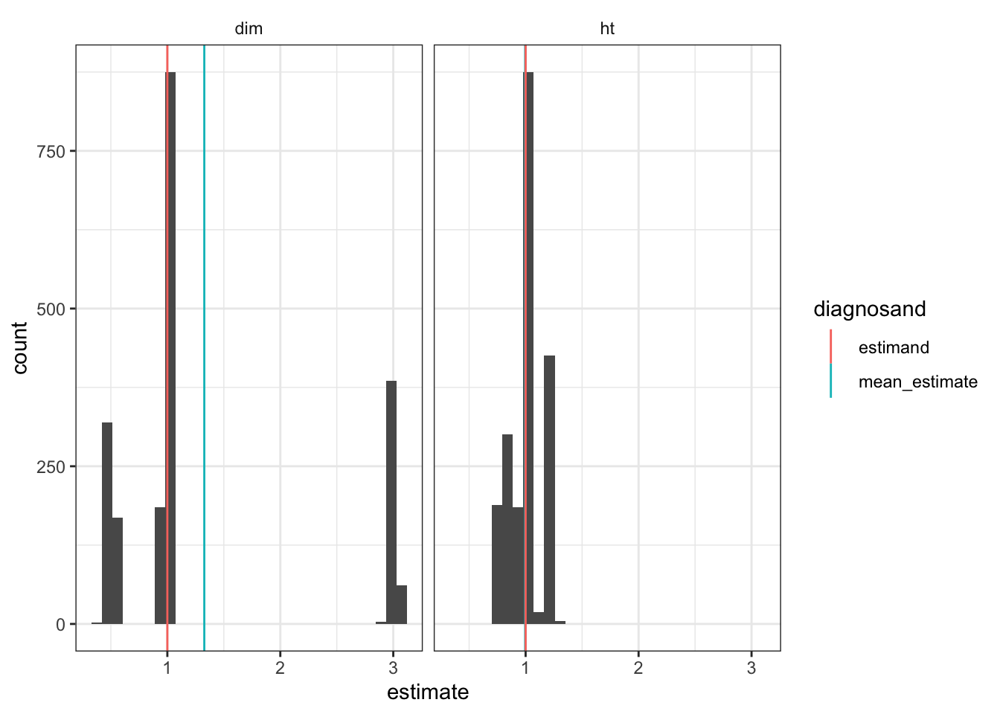

N_clusters <- 12
cluster_design <-
# M: Model
declare_model(clusters = add_level(N = N_clusters,
cl_size = rep(c(100, 10), c(N/6, N - N/6)),
effect = ifelse(cl_size == 100, 0, 3)),
units = add_level(N = cl_size, u = rnorm(N, sd = .2),
Y_Z_0 = u, Y_Z_1 = u + effect)) +
# I: Inquiry
declare_inquiry(ATE_i = mean(Y_Z_1 - Y_Z_0)) +
# D: Data Strategy
declare_assignment(Z = cluster_ra(clusters = clusters)) +
declare_measurement(Y = reveal_outcomes(Y ~ Z)) +
# A: Answer Strategy
declare_estimator(Y ~ Z, inquiry = "ATE_i", clusters = clusters,
model = lm_robust, label = "dim") +
declare_estimator(Y ~ Z, inquiry = "ATE_i", clusters = clusters,
condition_prs = 0.5, simple = FALSE,
model = horvitz_thompson, label = "ht")In many experiments, random assignment is performed at the level of clusters. Researchers are conscious that in such cases they cannot rely on the usual standard errors and they should take account of this feature by clustering their standard errors. Another, more subtle, risk in such designs is that if clusters are of different sizes, clustering can actually introduce bias, even if all clusters are assigned to treatment with the same probability. Luckily, there is a relatively simple fix that you can implement at the design stage.
For intuition, imagine two clusters, one of size 1,000,000 and the other of size 1. Say that outcomes are 0 in both clusters in the control condition, but that in the treatment condition they are 0 in the big cluster and 1 in the small one. Then the average treatment effect is about 0 (really: 1/1,000,000). But depending on which cluster is assigned to treatment one will (using difference-in-means) estimate either 0 or 1. So the expected estimate is 0.5. Far from the truth.
The Horvitz-Thompson estimator is an alternative to difference-in-means and does not have this problem. Using Horvitz-Thompson, one would estimate either \(\frac{1}{10^6}\left(\frac{1}{0.5} - \frac{0}{0.5}\right)\) or \(\frac{1}{10^6}\left(\frac{0}{0.5} - \frac{0}{0.5}\right)\) and so get it right in expectation. In practice however, researchers often avoid Horvitz-Thompson since it can produce estimates outside of the ranges of the data and can exhibit high variance.
The design-based fix for this problem is given in Imai et al. (2009). As they show, the problem can be greatly alleviated by blocking on cluster size. We will use a simple design declaration to show the problem and how blocking helps.
A design with heterogeneous cluster sizes
Let’s declare a design with heterogeneous cluster sizes. There are 300 units in 12 clusters. Two bigger clusters are of size 100 and 10 smaller clusters are of size 10. The 200 units in clusters of size 100 have a 0 treatment effect, the other 100 in clusters of size 10 have an effect of 3. This means that the average treatment effect is 1. Note that we did not include any cluster level “shocks” though we did include heterogeneous effects by cluster.
Here is the design:
In the plot below we show the distribution of possible estimates from different possible random assignments. The true treatment effect is 1. We see bias (of size 0.327) from the fact that the distribution is clearly not centered at 1. Very large effects (approx. 3) are estimated in those cases where both of the large clusters get assigned to control (and so all treated outcomes are around 3, right mode) whereas the estimated effects (approx. 0) when both are assigned to treatment are not so small in comparison (left mode), producing right skew. The HT estimator, in contrast, does fine on bias in this example and also has a tighter distribution.
simulate_design(cluster_design) %>%
ggplot(aes(estimate)) +
geom_histogram(bins = 30) +
geom_vline(xintercept = 1, linetype = "dashed") +
facet_wrap( ~ estimator)
Scale matters
The problem in this design, we saw, arises when all the large units get assigned to the control condition. This unlucky combination is a higher probability event in small studies than it is in large studies. In larger studies we are more likely to see balance in the allocation of units to treatment and control. To illustrate, we scale up to 120 clusters rather than 12. We see a more continuous distribution of treatment effects and in a particular a shift away from the extremes of the distribution, which arise only when like types end up in like conditions.
simulate_design(redesign(cluster_design, N_clusters = 120)) %>%
ggplot(aes(estimate)) +
geom_histogram(bins = 30) +
facet_wrap( ~ estimator)In this case the bias is of size 0.027, which is a big reduction.
Block on cluster size to address this risk
How can we address the bias in the difference-in-means estimator? As described in Imai et al. (2009), blocking our treatment assignment such that a similar number of large clusters are assigned to treatment and control, and a similar number of small clusters are assigned to treatment and control, can help a lot.
To see this, we can transform this cluster design into a blocked cluster design by changing the assignment strategy; here using one in which we pair off the clusters based on size and randomly assign one in each pair to treatment.
matched_cluster_design <- replace_step(
cluster_design, step = 3, declare_assignment(Z = block_and_cluster_ra(clusters = clusters, blocks = cl_size)))The sampling distribution of the difference-in-means estimators is tight—variation reflects only the random differences between clusters and not the systematic differences. It is, moreover, now equivalent to the HT distribution since there is essentially no differential weighting within blocks.
simulate_design(matched_cluster_design) %>%
ggplot(aes(estimate)) +
geom_histogram(bins = 30) +
facet_wrap( ~ estimator)Extension: The problem is aggravated by sampling (but there is a solution in that case also!)
This problem is amplified when clusters are sampled from a larger population of clusters with equal probability. In this case both the difference-in-means and the Horvitz Thompson estimators will be biased. The intuition is similar to the problem with random assignment: tiny clusters are equally likely to be sampled as very large clusters, and the inclusion of some tiny clusters biases down both estimators when outcomes are a function of cluster size. This bias will exist even when randomization is blocked on cluster size. One intuitive possibility to address this bias is to change the probability of sampling to oversample large clusters and undersample small clusters – probability-proportional-to-size sampling. Higgins (2014) proposes such a design. Intuitively, this helps because those tiny clusters that lead to bias are less likely to be selected. Higgins (2014) demonstrates that the Hansen and Hurwitz (1943) estimator is unbiased in this setting.
While we don’t declare this alternative design in this post we will sign off with a step declaration for the HH estimator which could be useful for addressing this problem in the future.
# A step!
hansen_hurwitz <- function(data){
data %>% group_by(clusters) %>%
summarize(is_treated = first(Z), cluster_mean = 1/n() * sum(Y)) %>%
ungroup %>%
summarize(estimate = sum(1/sum(is_treated) * cluster_mean[is_treated]) -
sum(1/sum(!is_treated) * cluster_mean[!is_treated])) %>%
as.data.frame
}References
Hansen, Morris H., and William N. Hurwitz. 1943. “On the Theory of Sampling from Finite Populations.” The Annals of Mathematical Statistics 14 (4): 333–62.
Higgins, Michael J. 2014. “The Benefits of Probability Proportional to Size Sampling in Cluster-Randomized Experiments.”
Imai, Kosuke, Gary King, Clayton Nall, et al. 2009. “The Essential Role of Pair Matching in Cluster-Randomized Experiments, with Application to the Mexican Universal Health Insurance Evaluation.” Statistical Science 24 (1): 29–53.